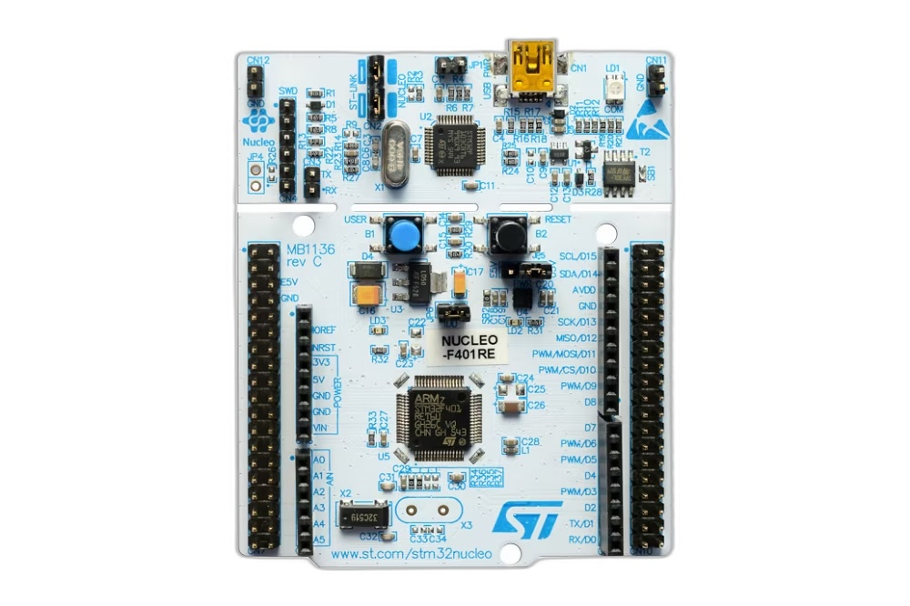
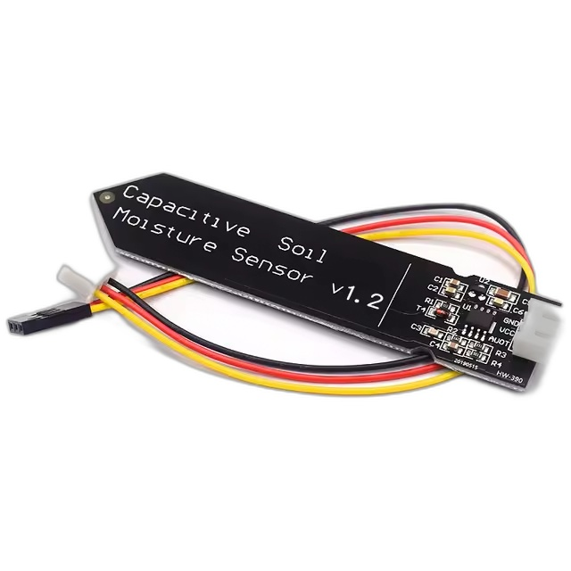
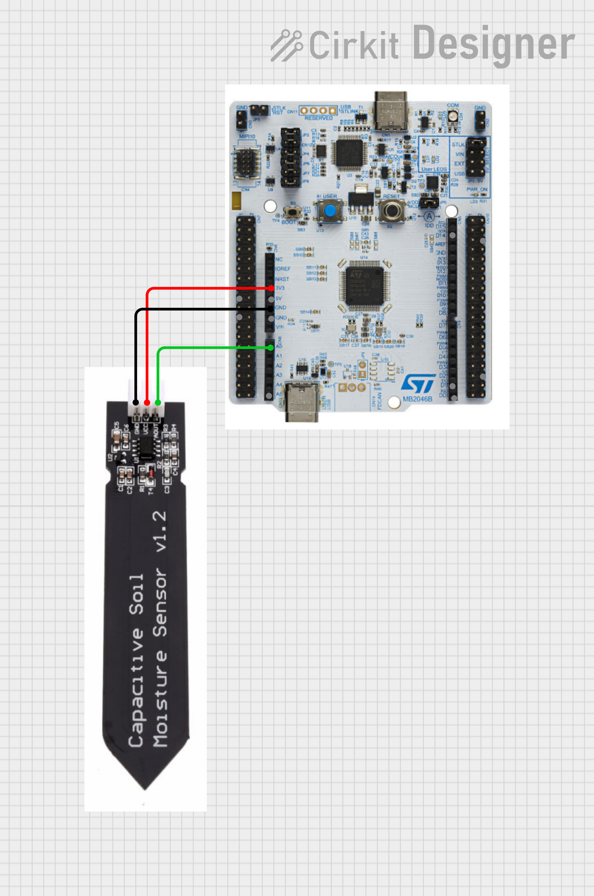

NUCLEO-F401RE + 토양 수분 센서를 활용한 ADC 실습
STM32 MCU 소개 및 Arduino/Raspberry Pi 비교
NUCLEO-F401RE 보드 상세 및 토양 수분 센서 이해
핀 연결 방법 및 ADC 기초 개념
STM32CubeMX 소개 및 프로젝트 생성
ADC 핀 설정 및 코드 생성
ADC 값 읽기, 전압 변환, 수분 퍼센트 계산
UART를 통한 시리얼 출력 및 센서 캘리브레이션
전체 코드 통합 및 테스트
실제 활용 방안 및 AI 도구 활용 팁
질문 및 답변

| MCU | STM32F401RE (ARM Cortex-M4) |
|---|---|
| 클럭 속도 | 최대 84 MHz |
| Flash | 512 KB |
| SRAM | 96 KB |
| ADC | 12-bit, 16채널 |
| 디버거 | ST-LINK/V2-1 내장 |
NUCLEO 보드는 STM32를 처음 배우는 사람들을 위해 설계되었습니다.
복잡한 하드웨어 설계 없이 소프트웨어 개발에 집중할 수 있습니다.

| 동작 전압 | 3.3V ~ 5V (3.3V 권장) |
|---|---|
| 출력 | 아날로그 전압 (0 ~ 3.0V) |
| 센싱 방식 | 정전용량(Capacitive) 방식 |
| 건조 시 출력 | 약 2.2V (높음) |
| 습함 시 출력 | 약 0.9V (낮음) |
저항식 센서와 달리 전극이 직접 물에 닿지 않아
부식에 강하고 수명이 깁니다!
두 개의 전극 사이에 전하를 저장할 수 있는 능력입니다.
전극 사이의 물질(유전체)이 다르면 저장할 수 있는 전하량도 달라집니다.
센서 내부 발진 회로가 고주파 신호 생성
전극 사이의 토양 유전율에 따라 정전용량 변화
정전용량 변화를 전압으로 변환하여 출력

| 센서 핀 | NUCLEO 핀 |
|---|---|
| VCC (빨강) | 3.3V |
| GND (검정) | GND |
| AOUT (노랑) | A0 (PA0) |
연속적인 아날로그 신호를 디지털 숫자로 변환하는 장치
0 ~ 4095 (2¹² = 4096 단계)로 전압을 표현
NUCLEO-F401RE는 3.3V가 최대값 (ADC값 4095)
ST에서 제공하는 그래픽 설정 도구로, 복잡한 레지스터 설정 없이 마우스 클릭만으로 주변장치를 설정하고 초기화 코드를 자동 생성합니다.
File → New → STM32 Project
Board Selector → NUCLEO-F401RE
Pinout 뷰에서 PA0을 ADC1_IN0으로 설정
Pinout view에서 PA0 클릭 → ADC1_IN0 선택
좌측 Categories → Analog → ADC1 → IN0 체크 확인
Resolution: 12 bits, Continuous Conversion Mode: Disabled (폴링 방식)
Project → Generate Code (또는 Ctrl+Shift+G)
| Resolution | 12 bits (0~4095) |
|---|---|
| Scan Conversion Mode | Disabled (단일 채널) |
| Continuous Conversion | Disabled (폴링 방식) |
main.c의 while(1) 루프 안에 다음 코드를 추가합니다:
건조할수록 전압이 높음 (약 2.5V~3.0V)
습할수록 전압이 낮음 (약 1.2V~1.5V)
NUCLEO 보드는 ST-LINK를 통해 USB 시리얼(UART2)을 지원합니다. printf로 값을 출력해봅시다.
Baud Rate: 115200 | Data: 8 bit | Parity: None | Stop: 1 bit
센서의 최대 침수선을 넘기지 마세요!
전자부품 영역이 물에 닿으면 고장의 원인이 됩니다.
수분이 30% 이하일 때 LED 켜기
GPIO 출력과 조건문 활용
릴레이 모듈과 펌프 연결
일정 수분 이하 시 자동 급수
ESP8266/ESP32와 연동
스마트폰으로 원격 확인
PC 프로그램과 연동하여
시간별 수분 변화 그래프 생성
ChatGPT, Claude 등 AI를 활용하면 개발 속도를 크게 높일 수 있습니다.
"STM32F401RE에서 ADC DMA 방식으로 여러 채널을 읽으려면 어떻게 해야 해?"
질문이 있으시면 편하게 말씀해주세요